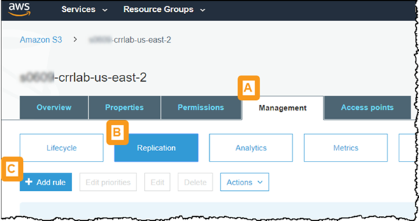
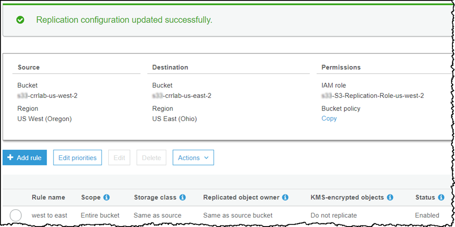
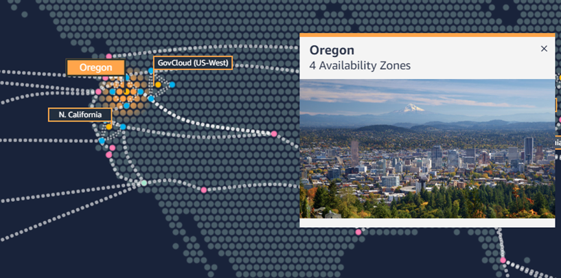
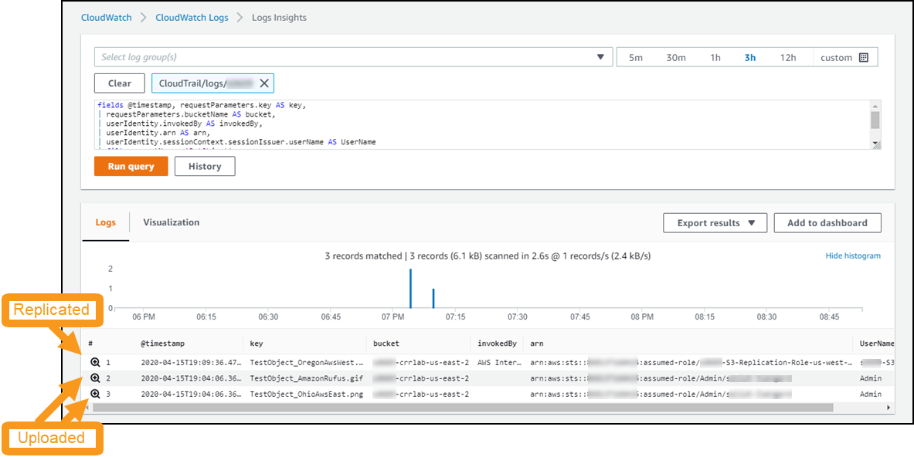
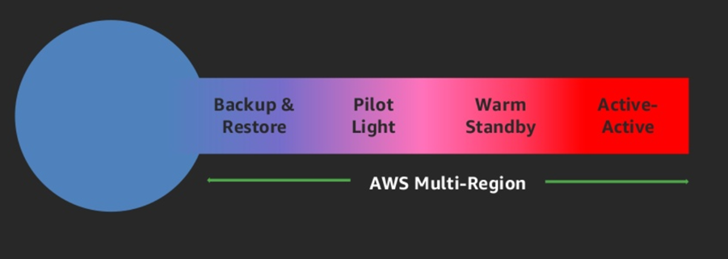

Level 200: Implementing Bi-Directional Cross-Region Replication (CRR) for Amazon Simple Storage Service (Amazon S3)
Author
- Seth Eliot, Principal Reliability Solutions Architect, AWS Well-Architected
AWS Well-Architected
This lab illustrates best practices for reliability as described in the AWS Well-Architected Reliability pillar. It addresses best practices to help answer the questions:
- How do you back up data?
- How do you plan for disaster recovery (DR)?
Upon completion of this lab, you will have created two S3 buckets in two different AWS regions. When a new object is put into one of them, it will be replicated to the other. Objects will be encrypted in both buckets. Objects will be replicated once -- replication "looping" is prevented.

This is a useful configuration for multi-region strategies that enable the workload to failover from the primary to the secondary region (such as pilot light or warm standby). All objects that were added to the primary region S3 bucket are asynchronously replicated to the secondary region S3 bucket. After a failover, when the workload is running in what was the secondary region, new objects added to the bucket in this region are also asynchronously replicated back to what was the primary region bucket.
This is also useful for multi-region active-active strategies where both regions are actively used for read and write operations.
This bi-directional replication occurs automatically. Looping is prevented with this configuration -- an object replicated from an S3 bucket in one region to another S3 bucket in the other AWS region will not be re-replicated back to the original bucket.
Table of Contents
- Deploy the infrastructure
- Configure bi-directional cross-region replication (CRR) for S3 buckets
- Test bi-directional cross-region replication (CRR)
- Tear down this lab
- References & useful resources
1. Deploy the infrastructure
You will create two Amazon S3 buckets in two different AWS regions. The Ohio region (also known as us-east-2) will be referred to throughout this lab as the east S3 bucket, and Oregon (also known as us-west-2) will be referred to as the west S3 bucket.
1.1 Log into the AWS console
If you are attending an in-person workshop and were provided with an AWS account by the instructor:
- Follow the instructions here for accessing your AWS account
If you are using your own AWS account:
- Sign in to the AWS Management Console as an IAM user who has PowerUserAccess or AdministratorAccess permissions, to ensure successful execution of this lab.
1.2 Deploy the infrastructure in two AWS Regions using an AWS CloudFormation template
You will deploy the infrastructure for two Amazon S3 buckets. Since these will be in two different regions, you will need to create an AWS CloudFormation stack in each region. You will use the same CloudFormation template for both regions.
- Download the s3_bucket.yaml CloudFormation template
1.2.1 Deploy east S3 bucket
- It is recommended that you deploy the east s3 bucket in the Ohio region. This region is also known as us-east-2.
- Use the drop-down to select this region

- If you choose to use a different region, you will need to ensure future steps are consistent with your region choice.
- Use the drop-down to select this region
- On the AWS Console go to the CloudFormation console
- Select Stacks
- Create a CloudFormation stack (with new resources) using the CloudFormation Template file and the Upload a template file option.
- For Stack name use
S3-CRR-lab-east - Under Parameters enter a NamingPrefix
- This will be used to name your S3 buckets
- Must be string consisting of lowercase letters, numbers, periods (.), and dashes (-) between five and 40 characters
- This will be part of your Amazon S3 bucket name, which must be unique across all of S3.
- Record this value in an accessible place -- you will need it again later in the lab.
- Click Next until the last page
- At the bottom of the page, select I acknowledge that AWS CloudFormation might create IAM resources with custom names
- Click Create stack
- You can go ahead and create the west bucket before this CloudFormation stack completes
Troubleshooting: If your CloudFormation stack deployment fails with the error \<bucket name> already exists
- You did not pick a unique enough NamingPrefix
- Delete the failed stack
- Start over and choose a more unique NamingPrefix
- Amazon S3 bucket names share a global name space across all of AWS (including all AWS regions)
1.2.2 Deploy west S3 bucket
-
It is recommended that you deploy the west s3 bucket in the Oregon region for this lab. This region is also known as us-west-2.
- Use the drop-down to select this region

- If you choose to use a different region, you will need to ensure future steps are consistent with your region choice.
- Use the drop-down to select this region
-
On the AWS Console go to the CloudFormation console
- Select Stacks
- Create a CloudFormation stack (with new resources) using the same CloudFormation Template file as before, and the Upload a template file option.
- For Stack name use
S3-CRR-lab-west - Under Parameters enter a NamingPrefix
- You must use the same value as you did previously
- Click Next until the last page
- At the bottom of the page, select I acknowledge that AWS CloudFormation might create IAM resources with custom names
- Click Create stack
1.2.3 Get bucket information
- Go back to the Ohio AWS Region and wait for the CloudFormation stack you created there to complete
- Click on the Outputs tab and record the Value of the S3 bucket name in an accessible location as east bucket
- Go to the the Oregon AWS Region and do the same thing, copying that S3 bucket name down as west bucket
- Go to the Amazon S3 console and verify that both buckets were created.
- Although S3 buckets are specific to an AWS region, the Amazon S3 console shows all buckets from all AWS Regions
- The two S3 buckets you will work with begin with
<your_naming_prefix>-crrlab - Note the regions for the two S3 buckets your created
- There are also two new
loggingbuckets -- you will not need to do any actions with these.
- Click on either the east region or west region bucket, and note the following
- This bucket is empty - We will be adding objects to the bucket soon
- Click on Properties and note what properties are Enabled
- Why are these properties Enabled?
Click here to see why these properties are Enabled
1. Versioning is Enabled:
For S3 Replication, both source and destination buckets MUST have versioning enabled
2. Default encryption is Enabled:
In our exercise we are demonstrating replication of encrypted objects.
It is a best practice to encrypt your data at rest.
3. Object-level logging is Enabled:
This logging will be used later in the lab.
It is used to better understand replication operations AWS takes on your behalf.
2. Configure bi-directional cross-region replication (CRR) for S3 buckets
Amazon S3 replication enables automatic, asynchronous copying of objects across Amazon S3 buckets. Buckets that are configured for object replication can be owned by the same AWS account or by different accounts. You can copy objects between different AWS Regions or within the same Region. You will setup bi-directional replication between S3 buckets in two different regions, owned by the same AWS account.
Replication is configured via rules. There is no rule for bi-directional replication. You will however setup a rule to replicate from the S3 bucket in the east AWS region to the west bucket, and you will setup a second rule to replicate going the opposite direction. These two rules will enable bi-directional replication across AWS regions.

2.1 Setup rule #1 to replicate objects from east bucket to west bucket
- Go to the Amazon S3 console
- Click on the name of the east bucket
- if you used Ohio the name will be
<your_naming_prefix>-crrlab-us-east-2
- if you used Ohio the name will be
- Click on the Management tab (Step A in screenshot)
- Click Replication (Step B in screenshot)
-
Click + Add Rule (Step C in screenshot)

-
For Set source select Entire bucket
- For Replication criteria leave Replicate objects encrypted with AWS KMS not selected
- Our objects are encrypted using server-side encryption
- However since you used SSE-S3 encryption, you do not need to select this option and do not need to provide a KMS key
- SSE-S3 uses KMS keys, but these managed by Amazon S3 for the user
- For more detail see What Does Amazon S3 Replicate?
- Click Next
- For Destination bucket leave Buckets in this account selected, and select the name of the west bucket from the drop-down
- If you used Oregon the name will be
<your_naming_prefix>-crrlab-us-west-2 - Troubleshooting: If you get an error saying The bucket doesn’t have versioning enabled then you have chosen the wrong bucket. Double check the bucket name.
- If you used Oregon the name will be
- Click Next
- For IAM Role select \<your-naming-prefix>-S3-Replication-Role-us-east-2 from the search results box
- (If you chose a different region as your east region, then look for that region at the end of the IAM role name)
- For Rule name enter
east to west - Leave Status set to enabled
- Click Next
- Review the configuration
- Click Save
The screen should say Replication configuration updated successfully. and display the Source, Destination, and Permissions of your replication rule

2.2 Test replication rule #1 - replicate object from east bucket to west bucket
To test this rule you will upload an object into the east bucket and observe that it is replicated into the west bucket. For this step you will need a test object:
- This is a file that you will upload into the east S3 bucket.
- It should not be too big, as this will increase the time to upload it from your computer.
- If you do not have a file to use, you can download this file.
Right-click and Save image as... 🡲
- Go to the Amazon S3 console, or if you are already there click on Amazon S3 in the upper left corner
- Click on the name of the east bucket
- if you used Ohio the name will be
<your_naming_prefix>-crrlab-us-east-2
- if you used Ohio the name will be
- Click on ⬆ Upload
- Upload the file you will use as an object
- Drag and drop the file or click Add files
- Click Upload (note there is a Next button, but you do not need to click it)
- When the file is finished uploading, click on the filename
- It will look like the left side of the screenshot below
- If Replication status is PENDING, wait and refresh until it says COMPLETED which should be just a few seconds.
- At the top of the console click on Amazon S3 and then click on the name of the west bucket
- If you used Oregon the name will be
<your_naming_prefix>-crrlab-us-west-2
- If you used Oregon the name will be
-
Click on the filename of the file that you just uploaded to the other bucket (yes, it is here now too!)
- It will look like the right side of the screenshot below

-
Note the following in from the object details:
- Replication status: Note the different values for the source (east) and destination (west) S3 buckets. The value REPLICA in the west bucket is part of the solution how the system recognizes it should not replicate this object back again to the east bucket, which would cause an infinite loop.
- Server-side encryption: The object was encrypted in the source (east) bucket, and remains encrypted in the destination (west) bucket.
2.3 Setup rule #2 to replicate objects from west bucket to east bucket
After setting up the second rule, you will have completed configuration of bi-directional replication between our two Amazon S3 buckets.
- Go to the Amazon S3 console, or if you are already there click on Amazon S3 in the upper left corner
- Click on the name of the west bucket
- if you used Oregon the name will be
<your_naming_prefix>-crrlab-us-west-2
- if you used Oregon the name will be
- Click on the Management tab
- Click Replication
- Click + Add Rule
- For Set source select Entire bucket
- For Replication criteria leave Replicate objects encrypted with AWS KMS not selected
- Our objects are encrypted using server-side encryption
- However since you used SSE-S3 encryption, you do not need to select this option and do not need to provide a KMS key
- SSE-S3 uses KMS keys, but these managed by Amazon S3 for the user
- For more detail see What Does Amazon S3 Replicate?
- Click Next
- For Destination bucket leave Buckets in this account selected, and select the name of the east bucket from the drop-down
- If you used Ohio the name will be
<your_naming_prefix>-crrlab-us-east-2 - Troubleshooting: If you get an error saying The bucket doesn’t have versioning enabled then you have chosen the wrong bucket. Double check the bucket name.
- If you used Ohio the name will be
- Click Next
- For IAM Role select \<your-naming-prefix>-S3-Replication-Role-us-west-2 from the search results box
- (If you chose a different region as your west region, then look for that region at the end of the IAM role name)
- For Rule name enter
west to east - Leave Status set to enabled
- Click Next
- Review the configuration
- Click Save
The screen should say Replication configuration updated successfully. and display the Source, Destination, and Permissions of your replication rule

3 Test bi-directional cross-region replication (CRR)
To test bi-directional replication using the two rules your created, you will upload another object into each of the east and west S3 buckets and observe it is replicated across to the other bucket. For this step you will need two more test objects:
- These are files that you will upload into each S3 bucket.
- They should not be too big, as this will increase the time to upload it from your computer.
- If you do not have files to use, you can download file #1 and download file #2
{kind=link}
| File #1 | File #2 |
|---|---|
 |
 |
3.1 Upload objects to their respective Amazon S3 buckets
3.1.1 Upload object #1 to the east S3 bucket
- Go to the Amazon S3 console, or if you are already there click on Amazon S3 in the upper left corner
- Click on the name of the east bucket
- if you used Ohio the name will be
<your_naming_prefix>-crrlab-us-east-2
- if you used Ohio the name will be
- Click on ⬆ Upload
- Upload the file you will use as object #1
- Drag and drop the file or click Add files
- Click Upload (note there is a Next button, but you do not need to click it)
3.1.2 Upload object #2 to the west S3 bucket
- Click on Amazon S3 in the upper left corner of the Amazon S3 console
- Click on the name of the west bucket
- if you used Oregon the name will be
<your_naming_prefix>-crrlab-us-west-2
- if you used Oregon the name will be
- Click on ⬆ Upload
- Upload the file you will use as object #2
- Drag and drop the file or click Add files
- Click Upload (note there is a Next button, but you do not need to click it)
3.2 Verify bi-directional replication
- You are already looking at the objects in the west bucket
- Verify that object #1, that you uploaded to the east bucket is present here also
- Note the Replication status is REPLICA
- Click on Amazon S3 in the upper left corner
- Click on the name of the east bucket
- Verify that object #2, that you uploaded to the west bucket is present here also
- Note the Replication status is REPLICA
3.3 Explore which Amazon S3 events trigger replication and which do not
3.3.1 Use CloudWatch Logs Insights to query the CloudTrail logs
AWS CloudTrail is a service that provides event history of your AWS account activity, including actions taken through the AWS Management Console, AWS SDKs, command line tools, and other AWS services. You will use AWS CloudTrail to explore which Amazon S3 events trigger replication to occur.
- Change back to the east AWS region
- If you used the directions in this lab, then this is Ohio (us-east-2)
- The CloudFormation template you deployed configured CloudTrail to deliver a trail to CloudWatch Logs. Therefore:
- Go to the CloudWatch console
- Click on Insights (under Logs) on the left
- Where it says Select log group(s) select the one named CloudTrail/logs/\<your_prefix_name>
-
Right below that is where you can enter a query
- Delete the query that is there
- and enter the following query. It returns all
PutObjectrequests on S3 bucketsfields @timestamp, requestParameters.key AS key, | requestParameters.bucketName AS bucket, | userIdentity.invokedBy AS invokedBy, | userIdentity.arn AS arn, | userIdentity.sessionContext.sessionIssuer.userName AS UserName | filter eventName ='PutObject' | sort @timestamp desc | limit 20
-
Click Run query
- Look at the results at the bottom of the screen
3.3.2 Difference between uploaded and replicated objects in S3 bucket
You are looking for three results, one for each of the test objects you uploaded. Use the key field to see the test object names.
-
Troubleshooting: If your query returned less or more than three results then consult this guide to tuning your Insights query
-
For these events look at the tabular attributes returned by the query at the bottom of the page
- However, if you want to see all the attributes, you can click to the left of each event
- The three events correspond to each of the objects you put into the S3 buckets
- The object you put into the east bucket testing rule #1
- The object you put into the east bucket testing bi-directional replication
- The object you put into the west bucket testing bi-directional replication
- Look at the bucket for this event. This event is for the east bucket
- This is actually the replication event for the object you put into the west bucket
- What is different between events where you uploaded the object into the bucket and events where the object was put into the bucket by replication?
Click here to see answers
Replicated objects have a userIdentity.invokedBy value of "AWS Internal"
The userIdentity is different - see the arn and username
The CloudWatch Logs Insights page should look like this:

The result is:
- For an object uploaded by you
- Amazon S3 triggers the rule you configured to replicate it to another bucket
- And sets Replication status to COMPLETED
- For an object replicated from another bucket
- Amazon S3 knows not to re-replicate the object
- And sets Replication status to REPLICA
3.4 Additional exercises
These are optional. They help you to explore and understand bi-direction cross-region replication on Amazon S3.
-
Look at the Permissions on the \<your-naming-prefix>-S3-Replication-Role-... IAM Roles
- Why do they have the policies that they do?
-
What happens when you rename an object in one of the buckets?
- Hint: if you cannot figure it out consider that versioning is enabled (and must be enabled for replication to work)
-
Switch to the west AWS region and run the same CloudWatch Insights Query there.
- What do you expect?
3.5 Summary
You created two S3 buckets in two different AWS regions. You then setup bi-directional cross-region replication (CRR) between the two Amazon S3 buckets. Putting an object in either bucket resulted in the object asynchronously being backed up to the other bucket. Objects encrypted in their original bucket are also encrypted in their replication bucket. Objects are replicated once -- replication "looping" is prevented.
4. Tear down this lab
If you are attending an in-person workshop and were provided with an AWS account by the instructor:
- There is no need to tear down the lab. Feel free to continue exploring. Log out of your AWS account when done.
If you are using your own AWS account:
- You may leave these resources deployed for as long as you want. When you are ready to delete these resources, see the following instructions
Empty the S3 buckets
You cannot delete an Amazon S3 bucket unless it is empty, so you need to empty the buckets you created. There are a total of four buckets:
- Replication bucket in east region:
<your_naming_prefix>-crrlab-us-east-2 - Replication bucket in west region:
<your_naming_prefix>-crrlab-us-west-2 - Logging bucket in east region:
logging-<your_naming_prefix>-us-east-2 - Logging bucket in west region:
logging-<your_naming_prefix>-us-west-2
Go to the Amazon S3 console, or if you are already there click on Amazon S3 in the upper left corner
For each of he four buckets do the following:
- Select the radio button next to the bucket
- Click Empty
- Type the bucket name in the confirmation box
- Click Empty
- After you see the message Successfully emptied bucket then click Exit
- For the logging buckets it is also recommended your delete the bucket now to prevent the logs from writing more data there after you empty it
- Follow the same steps as above, but click the Delete button (instead of Empty)
Remove AWS CloudFormation provisioned resources
How to delete an AWS CloudFormation stack
If you are already familiar with how to delete an AWS CloudFormation stack, then skip to the next section: Delete workshop CloudFormation stacks
- Go to the AWS CloudFormation console: https://console.aws.amazon.com/cloudformation
- Select the CloudFormation stack to delete and click Delete
- In the confirmation dialog, click Delete stack
- The Status changes to DELETE_IN_PROGRESS
- Click the refresh button to update and status will ultimately progress to DELETE_COMPLETE
- When complete, the stack will no longer be displayed. To see deleted stacks use the drop down next to the Filter text box.
- To see progress during stack deletion
- Click the stack name
- Select the Events column
- Refresh to see new events
Delete workshop CloudFormation stacks
- First delete the S3-CRR-lab-east CloudFormation stack in Ohio (us-east-2)
- Then delete the S3-CRR-lab-west CloudFormation stack in Oregon (us-west-2)
Troubleshooting: if your CloudFormation stack deletion fails with status DELETE_FAILED and error (from the Events tab) Cannot delete entity, must detach all policies first then see these additional instructions
References & useful resources
- What Is AWS Backup? - For backing up AWS resources other than S3
- AWS re:Invent 2018: Architecture Patterns for Multi-Region Active-Active Applications (ARC209-R2)
- AWS re:Invent 2019: Backup-and-restore and disaster-recovery solutions with AWS (STG208)
- S3: Cross-Region Replication
- Amazon S3 Replication Time Control for predictable replication time, backed by an SLA
- Well-Architected Framework (see the Reliability pillar)
- Well-Architected best practices for reliability
- Our Friend Rufus
Additional information on multi-region strategies for disaster recovery (DR)
Recovery Time Objective (RTO) and Recovery Point Objective (RPO)
These terms are most often associated with Disaster Recovery (DR), which are a set of objectives and strategies to recover workload availability in the case of a disaster
- Recovery time objective (RTO) is the overall length of time that a workload’s components can be in the recovery phase, and therefore not available, before negatively impacting the organization’s mission or mission/business processes.
- Recovery point objective (RPO) is the overall length of time that a workload’s data can be unavailable, before negatively impacting the organization’s mission or mission/business processes.
Use defined recovery strategies to meet defined recovery objectives
If necessary, when architecting a multi-region strategy for your workload, you should choose one of the following strategies. They are listed in increasing order of complexity, and decreasing order of RTO and RPO. DR Region refers to an AWS Region other than the one used for your workload (or any AWS Region if your workload is on premises).

- Backup and restore (RPO in hours, RTO in 24 hours or less): Back up your data and applications into the DR Region. Restore this data when necessary to recover from a disaster.
- Pilot light (RPO in minutes, RTO in hours): Maintain a minimal version of an environment always running the most critical core elements of your system in the DR Region. When the time comes for recovery, you can rapidly provision a full-scale production environment around the critical core.
- Warm standby (RPO in seconds, RTO in minutes): Maintain a scaled-down version of a fully functional environment always running in the DR Region. Business-critical systems are fully duplicated and are always on, but with a scaled down fleet. When the time comes for recovery, the system is scaled up quickly to handle the production load.
- Multi-region active-active (RPO is none or possibly seconds, RTO in seconds): Your workload is deployed to, and actively serving traffic from, multiple AWS Regions. This strategy requires you to synchronize users and data across the Regions that you are using. When the time comes for recovery, use services like Amazon Route 53 or AWS Global Accelerator to route your user traffic to where your workload is healthy.
The bi-directional cross-region replication that you created in this lab is helpful for Pilot light, Warm standby, and Multi-region active-active strategies.
License
Documentation License
Licensed under the Creative Commons Share Alike 4.0 license.
Code License
Licensed under the Apache 2.0 and MITnoAttr License.
Copyright 2020 Amazon.com, Inc. or its affiliates. All Rights Reserved.
Licensed under the Apache License, Version 2.0 (the "License"). You may not use this file except in compliance with the License. A copy of the License is located at
https://aws.amazon.com/apache2.0/
or in the "license" file accompanying this file. This file is distributed on an "AS IS" BASIS, WITHOUT WARRANTIES OR CONDITIONS OF ANY KIND, either express or implied. See the License for the specific language governing permissions and limitations under the License.